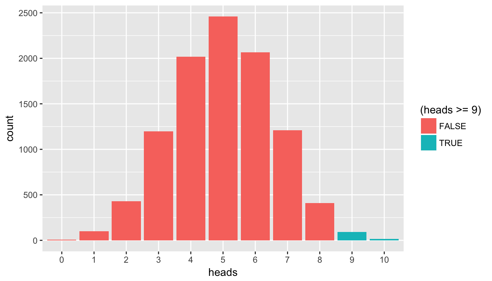

Chapter 5 Learning Check Solutions
5.1 Chapter 2 Solutions
library(dplyr)
library(ggplot2)
library(nycflights13)(LC2.1) What does any ONE row in this flights dataset refer to?
- A. Data on an airline
- B. Data on a flight
- C. Data on an airport
- D. Data on multiple flights
Solution: This is data on a flight. Not a flight path! Example:
- a flight path would be United 1545 to Houston
- a flight would be United 1545 to Houston at a specific date/time. For example: 2013/1/1 at 5:15am.
(LC2.2) What are some examples in this dataset of categorical variables? What makes them different than quantitative variables?
Solution: Hint: Type ?flights in the console to see what all the variables mean!
- Categorical:
carrierthe companydestthe destinationflightthe flight number. Even though this is a number, its simply a label. Example United 1545 is not less than United 1714
- Quantitative:
distancethe distance in milestime_hourtime
(LC2.3) What does int, dbl, and chr mean in the output above?
Solution:
int: integer. Used to count things i.e. a discrete value. Ex: the # of cars parked in a lotdbl: double. Used to measure things. i.e. a continuous value. Ex: your height in incheschr: character. i.e. text
5.2 Chapter 3 Solutions
library(nycflights13)
library(ggplot2)
library(dplyr)(LC3.1) Take a look at both the flights and alaska_flights data frames by running View(flights) and View(alaska_flights) in the console. In what respect do these data frames differ?
Solution: flights contains all flight data, while alaska_flights contains only data from Alaskan carrier “AS”. We can see that flights has 336776 rows while alaska_flights has only 714
(LC3.2) What are some practical reasons why dep_delay and arr_delay have a positive relationship?
Solution: The later a plane departs, typically the later it will arrive.
(LC3.3) What variables (not necessarily in the flights data frame) would you expect to have a negative correlation (i.e. a negative relationship) with dep_delay? Why? Remember that we are focusing on numerical variables here.
Solution: An example in the weather dataset is visibility, which measure visibility in miles. As visibility increases, we would expect departure delays to decrease.
(LC3.4) Why do you believe there is a cluster of points near (0, 0)? What does (0, 0) correspond to in terms of the Alaskan flights?
Solution: The point (0,0) means no delay in departure nor arrival. From the point of view of Alaska airlines, this means the flight was on time. It seems most flights are at least close to being on time.
(LC3.5) What are some other features of the plot that stand out to you?
Solution: Different people will answer this one differently. One answer is most flights depart and arrive less than an hour late.
(LC3.6) Create a new scatterplot using different variables in the alaska_flights data frame by modifying the example above.
Solution: Many possibilities for this one, see the plot below. Is there a pattern in departure delay depending on when the flight is scheduled to depart? Interestingly, there seems to be only two blocks of time where flights depart.
ggplot(data = alaska_flights, mapping = aes(x = dep_time, y = dep_delay)) +
geom_point()
(LC3.7) Why is setting the alpha argument value useful with scatterplots? What further information does it give you that a regular scatterplot cannot?
Solution: Why is setting the alpha argument value useful with scatterplots? What further information does it give you that a regular scatterplot cannot? It thins out the points so we address overplotting. But more importantly it hints at the (statistical) density and distribution of the points: where are the points concentrated, where do they occur. We will see more about densities and distributions in Chapter 6 when we switch gears to statistical topics.
(LC3.8) After viewing the Figure 3.4 above, give an approximate range of arrival delays and departure delays that occur the most frequently. How has that region changed compared to when you observed the same plot without the alpha = 0.2 set in Figure 3.2?
Solution: After viewing the Figure 3.4 above, give a range of arrival delays and departure delays that occur most frequently? How has that region changed compared to when you observed the same plot without the alpha = 0.2 set in Figure 3.2? The lower plot suggests that most Alaska flights from NYC depart between 12 minutes early and on time and arrive between 50 minutes early and on time.
(LC3.9) Take a look at both the weather and early_january_weather data frames by running View(weather) and View(early_january_weather) in the console. In what respect do these data frames differ?
Solution: Take a look at both the weather and early_january_weather data frames by running View(weather) and View(early_january_weather) in the console. In what respect do these data frames differ? The rows of early_january_weather are a subset of weather.
(LC3.10) View() the flights data frame again. Why does the time_hour variable uniquely identify the hour of the measurement whereas the hour variable does not?
Solution: View() the flights data frame again. Why does the time_hour variable correctly identify the hour of the measurement whereas the hour variable does not? Because to uniquely identify an hour, we need the year/month/day/hour sequence, whereas there are only 24 possible hour’s.
(LC3.11) Why should linegraphs be avoided when there is not a clear ordering of the horizontal axis?
Solution: Why should linegraphs be avoided when there is not a clear ordering of the horizontal axis? Because lines suggest connectedness and ordering.
(LC3.12) Why are linegraphs frequently used when time is the explanatory variable?
Solution: Why are linegraphs frequently used when time is the explanatory variable? Because time is sequential: subsequent observations are closely related to each other.
(LC3.13) Plot a time series of a variable other than temp for Newark Airport in the first 15 days of January 2013.
Solution: Plot a time series of a variable other than temp for Newark Airport in the first 15 days of January 2013. Humidity is a good one to look at, since this very closely related to the cycles of a day.
ggplot(data = early_january_weather, mapping = aes(x = time_hour, y = humid)) +
geom_line()
(LC3.14) What does changing the number of bins from 30 to 60 tell us about the distribution of temperatures?
Solution: The distribution doesn’t change much. But by refining the bid width, we see that the temperature data has a high degree of accuracy. What do I mean by accuracy? Looking at the temp variabile by View(weather), we see that the precision of each temperature recording is 2 decimal places.
(LC3.15) Would you classify the distribution of temperatures as symmetric or skewed?
Solution: It is rather symmetric, i.e. there are no long tails on only one side of the distribution
(LC3.16) What would you guess is the “center” value in this distribution? Why did you make that choice?
Solution: The center is around 55.2603921°F. By running the summary() command, we see that the mean and median are very similar. In fact, when the distribution is symmetric the mean equals the median.
(LC3.17) Is this data spread out greatly from the center or is it close? Why?
Solution: This can only be answered relatively speaking! Let’s pick things to be relative to Seattle, WA temperatures:

While, it appears that Seattle weather has a similar center of 55°F, its temperatures are almost entirely between 35°F and 75°F for a range of about 40°F. Seattle temperatures are much less spread out than New York i.e. much more consistent over the year. New York on the other hand has much colder days in the winter and much hotter days in the summer. Expressed differently, the middle 50% of values, as delineated by the interquartile range is 30°F:
(LC3.18) What other things do you notice about the faceted plot above? How does a faceted plot help us see relationships between two variables?
Solution:
- Certain months have much more consistent weather (August in particular), while others have crazy variability like January and October, representing changes in the seasons.
- The two variables we are see the relationship of are
tempandmonth.
(LC3.19) What do the numbers 1-12 correspond to in the plot above? What about 25, 50, 75, 100?
Solution:
- While month is technically a number between 1-12, we’re viewing it as a categorical variable here. Specifically an ordinal categorical variable since there is a ordering to the categories
- 25, 50, 75, 100 are temperatures
(LC3.20) For which types of data-sets would these types of faceted plots not work well in comparing relationships between variables? Give an example describing the nature of these variables and other important characteristics.
Solution:
- We’d have 365 facets to look at. Way to many.
- We don’t really care about day-to-day fluctuation in weather so much, but maybe more week-to-week variation. We’d like to focus on seasonal trends.
(LC3.21) Does the temp variable in the weather data-set have a lot of variability? Why do you say that?
Solution: Again, like in LC (LC3.17), this is a relative question. I would say yes, because in New York City, you have 4 clear seasons with different weather. Whereas in Seattle WA and Portland OR, you have two seasons: summer and rain!
(LC3.22) What does the dot at the bottom of the plot for May correspond to? Explain what might have occurred in May to produce this point.
Solution: It appears to be an outlier. Let’s revisit the use of the filter command to hone in on it. We want all data points where the month is 5 and temp<25
weather %>%
filter(month==5 & temp < 25)# A tibble: 1 x 15
origin year month day hour temp dewp humid wind_dir wind_speed wind_gust
<chr> <dbl> <dbl> <int> <int> <dbl> <dbl> <dbl> <dbl> <dbl> <dbl>
1 JFK 2013 5 8 22 13.1 12.0 95.3 80 8.06 NA
# ... with 4 more variables: precip <dbl>, pressure <dbl>, visib <dbl>,
# time_hour <dttm>There appears to be only one hour and only at JFK that recorded 13.1 F (-10.5 C) in the month of May. This is probably a data entry mistake! Why wasn’t the weather at least similar at EWR (Newark) and LGA (La Guardia)?
(LC3.23) Which months have the highest variability in temperature? What reasons do you think this is?
Solution: We are now interested in the spread of the data. One measure some of you may have seen previously is the standard deviation. But in this plot we can read off the Interquartile Range (IQR):
- The distance from the 1st to the 3rd quartiles i.e. the length of the boxes
- You can also think of this as the spread of the middle 50% of the data
Just from eyeballing it, it seems
- November has the biggest IQR, i.e. the widest box, so has the most variation in temperature
- August has the smallest IQR, i.e. the narrowest box, so is the most consistent temperature-wise
Here’s how we compute the exact IQR values for each month (we’ll see this more in depth Chapter 5 of the text):
groupthe observations bymonththen- for each
group, i.e.month,summarizeit by applying the summary statistic functionIQR(), while making sure to skip over missing data viana.rm=TRUEthen arrangethe table indescending order ofIQR
weather %>%
group_by(month) %>%
summarize(IQR = IQR(temp, na.rm=TRUE)) %>%
arrange(desc(IQR))| month | IQR |
|---|---|
| 11 | 16.02 |
| 12 | 14.04 |
| 1 | 13.77 |
| 9 | 12.06 |
| 4 | 12.06 |
| 5 | 11.88 |
| 6 | 10.98 |
| 10 | 10.98 |
| 2 | 10.08 |
| 7 | 9.18 |
| 3 | 9.00 |
| 8 | 7.02 |
(LC3.24) We looked at the distribution of a numerical variable over a categorical variable here with this boxplot. Why can’t we look at the distribution of one numerical variable over the distribution of another numerical variable? Say, temperature across pressure, for example?
Solution: Because we need a way to group many numerical observations together, say by grouping by month. For pressure, we have near unique values for pressure, i.e. no groups, so we can’t make boxplots.
(LC3.25) Boxplots provide a simple way to identify outliers. Why may outliers be easier to identify when looking at a boxplot instead of a faceted histogram?
Solution: In a histogram, the bin corresponding to where an outlier lies may not by high enough for us to see. In a boxplot, they are explicitly labelled separately.
(LC3.26) Why are histograms inappropriate for visualizing categorical variables?
Solution: Histograms are for numerical variables i.e. the horizontal part of each histogram bar represents an interval, whereas for a categorical variable each bar represents only one level of the categorical variable.
(LC3.27) What is the difference between histograms and barplots?
Solution: See above.
(LC3.28) How many Envoy Air flights departed NYC in 2013?
Solution: Envoy Air is carrier code MQ and thus 26397 flights departed NYC in 2013.
(LC3.29) What was the seventh highest airline in terms of departed flights from NYC in 2013? How could we better present the table to get this answer quickly?
Solution: What a pain! We’ll see in Chapter 5 on Data Wrangling that applying arrange(desc(n)) will sort this table in descending order of n!
(LC3.30) Why should pie charts be avoided and replaced by barplots?
Solution: In our opinion, comparisons using horizontal lines are easier than comparing angles and areas of circles.
(LC3.31) What is your opinion as to why pie charts continue to be used?
Solution: Legacy?
(LC3.32) What kinds of questions are not easily answered by looking at the above figure?
Solution: Because the red, green, and blue bars don’t all start at 0 (only red does), it makes comparing counts hard.
(LC3.33) What can you say, if anything, about the relationship between airline and airport in NYC in 2013 in regards to the number of departing flights?
Solution: The different airlines prefer different airports. For example, United is mostly a Newark carrier and JetBlue is a JFK carrier. If airlines didn’t prefer airports, each color would be roughly one third of each bar.}
(LC3.34) Why might the side-by-side (AKA dodged) barplot be preferable to a stacked barplot in this case?
Solution: We can easily compare the different aiports for a given carrier using a single comparison line i.e. things are lined up
(LC3.35) What are the disadvantages of using a side-by-side (AKA dodged) barplot, in general?
Solution: It is hard to get totals for each airline.
(LC3.36) Why is the faceted barplot preferred to the side-by-side and stacked barplots in this case?
Solution: Not that different than using side-by-side; depends on how you want to organize your presentation.
(LC3.37) What information about the different carriers at different airports is more easily seen in the faceted barplot?
Solution: Now we can also compare the different carriers within a particular airport easily too. For example, we can read off who the top carrier for each airport is easily using a single horizontal line.
5.3 Chapter 4 Solutions
library(dplyr)
library(ggplot2)
library(nycflights13)
library(tidyr)
library(readr)(LC4.1) Consider the following data frame of average number of servings of beer, spirits, and wine consumption in three countries as reported in the FiveThirtyEight article Dear Mona Followup: Where Do People Drink The Most Beer, Wine And Spirits?
# A tibble: 3 x 4
country beer_servings spirit_servings wine_servings
<chr> <int> <int> <int>
1 Canada 240 122 100
2 South Korea 140 16 9
3 USA 249 158 84This data frame is not in tidy format. What would it look like if it were?
Solution: There are three variables of information included: country, alcohol type, and number of servings. In tidy format, each of these variables of information are included in their own column.
# A tibble: 9 x 3
country `alcohol type` servings
<chr> <chr> <int>
1 Canada beer 240
2 Canada spirit 122
3 Canada wine 100
4 South Korea beer 140
5 South Korea spirit 16
6 South Korea wine 9
7 USA beer 249
8 USA spirit 158
9 USA wine 84Note that how the rows are sorted is inconsequential in whether or not the data frame is in tidy format. In other words, the following data frame sorted by alcohol type instead of country is equally in tidy format.
# A tibble: 9 x 3
country `alcohol type` servings
<chr> <chr> <int>
1 Canada beer 240
2 South Korea beer 140
3 USA beer 249
4 Canada spirit 122
5 South Korea spirit 16
6 USA spirit 158
7 Canada wine 100
8 South Korea wine 9
9 USA wine 84(LC4.2) What properties of the observational unit do each of lat, lon, alt, tz, dst, and tzone describe for the airports data frame? Note that you may want to use ?airports to get more information.
Solution: lat long represent the airport geographic coordinates, alt is the altitude above sea level of the airport (Run airports %>% filter(faa == "DEN") to see the altitude of Denver International Airport), tz is the time zone difference with respect to GMT in London UK, dst is the daylight savings time zone, and tzone is the time zone label.
(LC4.3) Provide the names of variables in a data frame with at least three variables in which one of them is an identification variable and the other two are not. In other words, create your own tidy dataset that matches these conditions.
Solution:
- In the
weatherexample in LC3.8, the combination oforigin,year,month,day,hourare identification variables as they identify the observation in question. - Anything else pertains to observations:
temp,humid,wind_speed, etc.
(LC4.4) Convert the dem_score data frame into a tidy data frame and assign the name of dem_score_tidy to the resulting long-formatted data frame.
Solution: Running the following in the console:
dem_score_tidy <- gather(data = dem_score, key = year, value = democracy_score, - country)Let’s now compare the dem_score and dem_score_tidy. dem_score has democracy score information for each year in columns, whereas in dem_score_tidy there are explicit variables year and democracy_score. While both representations of the data contain the same information, we can only use ggplot() to create plots using the dem_score_tidy data frame.
dem_score# A tibble: 96 x 10
country `1952` `1957` `1962` `1967` `1972` `1977` `1982` `1987` `1992`
<chr> <int> <int> <int> <int> <int> <int> <int> <int> <int>
1 Albania -9 -9 -9 -9 -9 -9 -9 -9 5
2 Argentina -9 -1 -1 -9 -9 -9 -8 8 7
3 Armenia -9 -7 -7 -7 -7 -7 -7 -7 7
4 Australia 10 10 10 10 10 10 10 10 10
5 Austria 10 10 10 10 10 10 10 10 10
6 Azerbaijan -9 -7 -7 -7 -7 -7 -7 -7 1
7 Belarus -9 -7 -7 -7 -7 -7 -7 -7 7
8 Belgium 10 10 10 10 10 10 10 10 10
9 Bhutan -10 -10 -10 -10 -10 -10 -10 -10 -10
10 Bolivia -4 -3 -3 -4 -7 -7 8 9 9
# ... with 86 more rowsdem_score_tidy# A tibble: 864 x 3
country year democracy_score
<chr> <chr> <int>
1 Albania 1952 -9
2 Argentina 1952 -9
3 Armenia 1952 -9
4 Australia 1952 10
5 Austria 1952 10
6 Azerbaijan 1952 -9
7 Belarus 1952 -9
8 Belgium 1952 10
9 Bhutan 1952 -10
10 Bolivia 1952 -4
# ... with 854 more rows(LC4.5) Read in the life expectancy data stored at https://moderndive.com/data/le_mess.csv and convert it to a tidy data frame.
Solution: The code is similar
life_expectancy <- read_csv('https://moderndive.com/data/le_mess.csv')
life_expectancy_tidy <- gather(data = life_expectancy, key = year, value = life_expectancy, -country)We observe the same construct structure with respect to year in life_expectancy vs life_expectancy_tidy as we did in dem_score vs dem_score_tidy:
life_expectancy# A tibble: 202 x 67
country `1951` `1952` `1953` `1954` `1955` `1956` `1957` `1958` `1959` `1960`
<chr> <dbl> <dbl> <dbl> <dbl> <dbl> <dbl> <dbl> <dbl> <dbl> <dbl>
1 Afghan… 27.1 27.7 28.2 28.7 29.3 29.8 30.3 30.9 31.4 31.9
2 Albania 54.7 55.2 55.8 56.6 57.4 58.4 59.5 60.6 61.8 62.9
3 Algeria 43.0 43.5 44.0 44.4 44.9 45.4 45.9 46.4 47.0 47.5
4 Angola 31.0 31.6 32.1 32.7 33.2 33.8 34.3 34.9 35.4 36.0
5 Antigu… 58.3 58.8 59.3 59.9 60.4 60.9 61.4 62.0 62.5 63.0
6 Argent… 61.9 62.5 63.1 63.6 64.0 64.4 64.7 65 65.2 65.4
7 Armenia 62.7 63.1 63.6 64.1 64.5 65 65.4 65.9 66.4 66.9
8 Aruba 59.0 60.0 61.0 61.9 62.7 63.4 64.1 64.7 65.2 65.7
9 Austra… 68.7 69.1 69.7 69.8 70.2 70.0 70.3 70.9 70.4 70.9
10 Austria 65.2 66.8 67.3 67.3 67.6 67.7 67.5 68.5 68.4 68.8
# ... with 192 more rows, and 56 more variables: `1961` <dbl>, `1962` <dbl>,
# `1963` <dbl>, `1964` <dbl>, `1965` <dbl>, `1966` <dbl>, `1967` <dbl>,
# `1968` <dbl>, `1969` <dbl>, `1970` <dbl>, `1971` <dbl>, `1972` <dbl>,
# `1973` <dbl>, `1974` <dbl>, `1975` <dbl>, `1976` <dbl>, `1977` <dbl>,
# `1978` <dbl>, `1979` <dbl>, `1980` <dbl>, `1981` <dbl>, `1982` <dbl>,
# `1983` <dbl>, `1984` <dbl>, `1985` <dbl>, `1986` <dbl>, `1987` <dbl>,
# `1988` <dbl>, `1989` <dbl>, `1990` <dbl>, `1991` <dbl>, `1992` <dbl>,
# `1993` <dbl>, `1994` <dbl>, `1995` <dbl>, `1996` <dbl>, `1997` <dbl>,
# `1998` <dbl>, `1999` <dbl>, `2000` <dbl>, `2001` <dbl>, `2002` <dbl>,
# `2003` <dbl>, `2004` <dbl>, `2005` <dbl>, `2006` <dbl>, `2007` <dbl>,
# `2008` <dbl>, `2009` <dbl>, `2010` <dbl>, `2011` <dbl>, `2012` <dbl>,
# `2013` <dbl>, `2014` <dbl>, `2015` <dbl>, `2016` <dbl>life_expectancy_tidy# A tibble: 13,332 x 3
country year life_expectancy
<chr> <chr> <dbl>
1 Afghanistan 1951 27.1
2 Albania 1951 54.7
3 Algeria 1951 43.0
4 Angola 1951 31.0
5 Antigua and Barbuda 1951 58.3
6 Argentina 1951 61.9
7 Armenia 1951 62.7
8 Aruba 1951 59.0
9 Australia 1951 68.7
10 Austria 1951 65.2
# ... with 13,322 more rows(LC4.6) What are common characteristics of “tidy” datasets?
Solution: Rows correspond to observations, while columns correspond to variables.
(LC4.7) What makes “tidy” datasets useful for organizing data?
Solution: Tidy datasets are an organized way of viewing data. We’ll see later that this format is required for the ggplot2 and dplyr packages for data visualization and wrangling.
(LC4.8) What are some advantages of data in normal forms? What are some disadvantages?
Solution: When datasets are in normal form, we can easily _join them with other datasets! For example, can we join the flights data with the planes data? We’ll see this more in Chapter 5!
Chihara, Laura M., and Tim C. Hesterberg. 2011. Mathematical Statistics with Resampling and R. Hoboken, NJ: John Wiley; Sons. https://sites.google.com/site/chiharahesterberg/home.
Diez, David M, Christopher D Barr, and Mine Çetinkaya-Rundel. 2014. Introductory Statistics with Randomization and Simulation. First Edition. https://www.openintro.org/stat/textbook.php?stat_book=isrs.
Grolemund, Garrett, and Hadley Wickham. 2016. R for Data Science. http://r4ds.had.co.nz/.
Ismay, Chester. 2016. Getting Used to R, RStudio, and R Markdown. http://ismayc.github.io/rbasics-book.
Kim, Albert Y., Chester Ismay, and Jennifer Chunn. 2018. Fivethirtyeight: Data and Code Behind the Stories and Interactives at ’Fivethirtyeight’. https://github.com/rudeboybert/fivethirtyeight.
Robbins, Naomi. 2013. Creating More Effective Graphs. Chart House.
Wickham, Hadley. 2014. “Tidy Data.” Journal of Statistical Software Volume 59 (Issue 10). https://www.jstatsoft.org/index.php/jss/article/view/v059i10/v59i10.pdf.
———. 2018. Nycflights13: Flights That Departed Nyc in 2013. https://CRAN.R-project.org/package=nycflights13.
Wickham, Hadley, and Lionel Henry. 2018. Tidyr: Easily Tidy Data with ’Spread()’ and ’Gather()’ Functions. https://CRAN.R-project.org/package=tidyr.
Wickham, Hadley, Winston Chang, Lionel Henry, Thomas Lin Pedersen, Kohske Takahashi, Claus Wilke, and Kara Woo. 2018. Ggplot2: Create Elegant Data Visualisations Using the Grammar of Graphics.
Wilkinson, Leland. 2005. The Grammar of Graphics (Statistics and Computing). Secaucus, NJ, USA: Springer-Verlag New York, Inc.
Xie, Yihui. 2018. Bookdown: Authoring Books and Technical Documents with R Markdown. https://CRAN.R-project.org/package=bookdown.